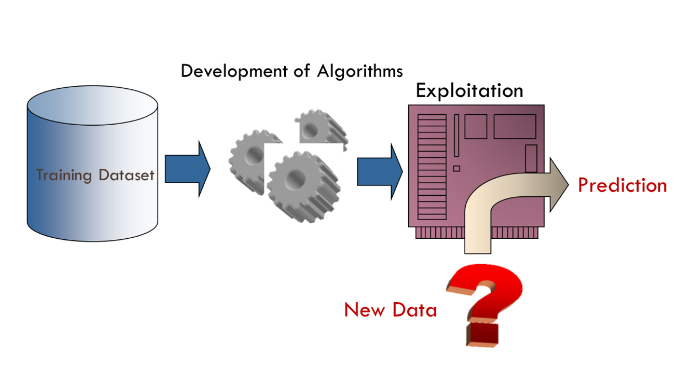
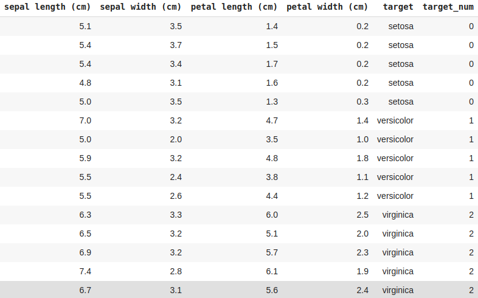
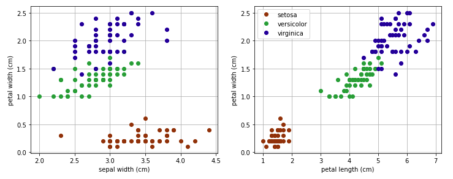
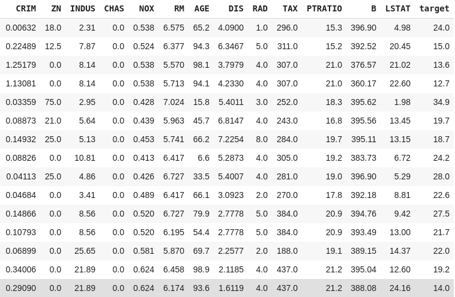
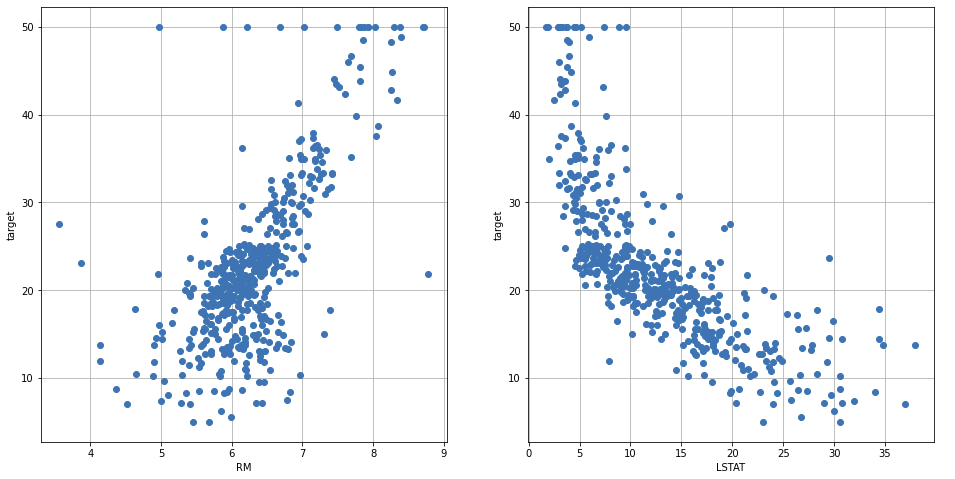
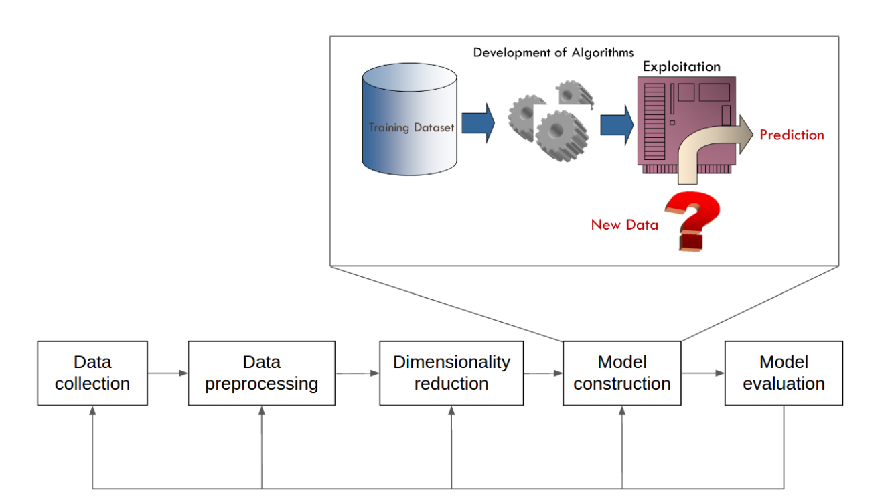
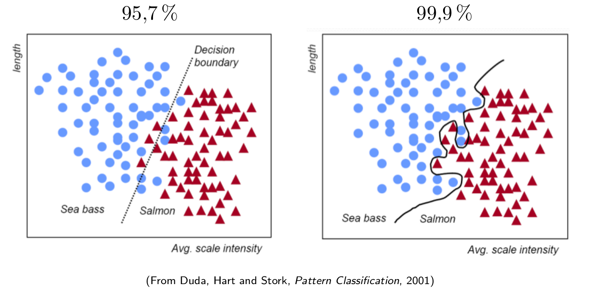
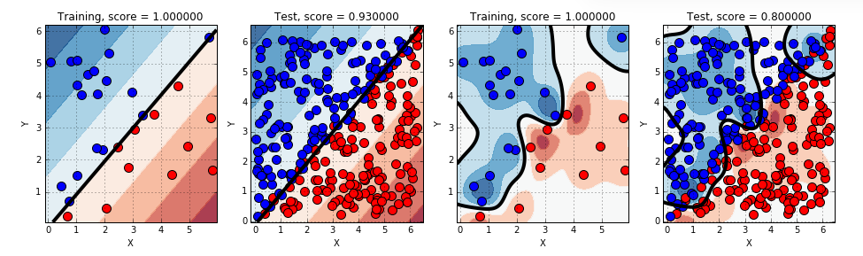
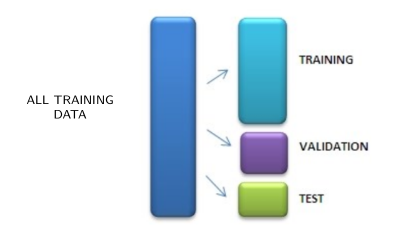

Introduction to
(Deep) Neural Networks
Luis F. Lago Fernández
MIAX-5
Course presentation
Lecturer
- Dr. Luis F. Lago Fernández
- e-mail: luis.lago@uam.es
Learning outcomes
Upon completion of this course, you will be able to:
- Understand the fundamentals of DL within the ML learning context
- Train a DNN, choosing the most appropriate characteristics and optimizing the hyperparameters
- Implement DL algorithms using different tools, such as TensorFlow, Keras or PyTorch
Course contents
Introduction to Deep Learning
Machine learning fundamentals
Neural Network basics:
- Shallow neural networks
- Backpropagation
Deep Neural Networks:
- Practical aspects of deep learning: activation functions, loss functions, weight initialization
- Batch normalization.
- Regularization techniques, dropout
Optimization techniques:
- Stochastic Gradient Descent
- Adaptive methods
Hyper-parameter tuning
Deep learning architectures:
- Convolutional neural networks
- Recurrent neural networks
- Autoencoders and GANs
Deep Learning programming and parallelization tools: TensorFlow, Keras, PyTorch
Bibliography
Deep Learning. I. Goodfellow, Y. Bengio and A. Courville. MIT Press, 2016. http://www.deeplearningbook.org/
Neural Networks and Deep Learning. M. Nielsen. http://neuralnetworksanddeeplearning.com/
Hands-On Machine Learning with Scikit-Learn and TensorFlow. A. Geron. O’Reilly, 2017.
Deep Learning with Python. F. Chollet. Manning, 2017.
Schedule
| Day | Contents |
|---|---|
| Day 1 | Introduction and basic concepts Machine Learning Fundamentals Linear Regression Gradient Descent |
| Day 2 | Logistic Regression Non-linear models Introduction to Neural Networks NN Implementation (forward pass) |
Schedule
| Day | Contents |
|---|---|
| Day 3 | Backpropagation NN Implementation (backward pass) Introduction to TensorFlow Automatic Differentiation in TF |
| Day 4 | NN implementation in TF Practical aspects of NN Training: SGD, loss function, activation function Keras I |
Schedule
| Day | Contents |
|---|---|
| Day 5 | Practical aspects of NN Training: regularization, weight initialization, batch normalization Second order optimization techniques Keras II |
| Day 6 | Hyperparameter optimization Introduction to PyTorch |
Schedule
| Day | Contents |
|---|---|
| Day 7 | Deep Learning Architectures Kohonen Networks Practical Assignment |
Additional resources
Introduction to Deep Learning, MIT, http://introtodeeplearning.com/
Convolutional Neural Networks for Visual Recognition, Stanford, http://cs231n.stanford.edu/
TensorFlow tutorials, https://www.tensorflow.org/tutorials/
TensorFlow Playground, http://playground.tensorflow.org
Recommendations
- The following skills are highly recommended:
- Calculus
- Linear algebra
- Statistics and probability theory
- Python programming
What if I need to review maths concepts?
- Chapters 2 and 3 of Goodfellow’s book:
- Linear Algebra Review and Reference, Zico Kolter, 2015
What if I need to review programming concepts?
- Python Numpy Tutorial (with Jupyter and Colab), Justin Johnson
Introduction to deep learning
- What is deep learning?
- Why now?
What is Deep Learning?
- A subfield of Machine Learning: learn without being explicitly programmed
- Make predictions on data using Neural Networks
- Deep neural networks: many layers
Why deep learning now?
- Lots of data
- Increase in computational power (parallelization, GPUs, …)
- New programming tools, algorithms and tricks
Machine Learning basics
Suggested reading: https://www.deeplearningbook.org/contents/ml.html
What is Machine Learning?
Field of study that gives computers the ability to learn without being explicitly programmed. (Attributed to A. Samuel, 1959)
Subfield of AI that studies computer algorithms that improve automatically through experience. (Wikipedia, 2020)
Different learning tasks
Supervised machine learning
- Classification
- Regression
Unsupervised machine learning
Semi-supervised machine learning
Reinforcement learning
Supervised machine learning - definitions
The problem data is the set of patterns \(\{({\bf x}_{1} , t_{1}), ({\bf x}_{2}, t_{2}), ..., ({\bf x}_{n}, t_{n})\}\), where:
- \({\bf x}_{i}\) is the attribute vector for pattern \(i\)
- \(t_{i}\) is the target (variable to predict) for pattern \(i\)
- \(n\) is the total number of patterns
The goal is to predict the target \(t_{i}\) given the attribute vector \({\bf x}_{i}\)
Parametric models for classification (regression)
A classifier (regressor) is a function \(f({\bf x}, \theta)\) that assigns each pattern \({\bf x}_i\) an estimation of its target value: \(y_{i} = f({\bf x}_{i} , \theta) \approx t_{i}\)
Model training: tune the model parameters \(\theta\) in order to minimize a loss function \(L(y_{i}, t_{i})\)
Different function families define different types of models: Neural Networks, SVMs, etc.
Supervised machine learning - Overview

Supervised machine learning - an example
The Iris plant dataset (R.A. Fisher, 1936)
- Classify Iris plant samples into 3 subspecies: Setosa, Virginica and Versicolor
- Use the width and length of petal and sepal as attributes
Supervised machine learning - an example
The Iris plant dataset (R.A. Fisher, 1936)

Supervised machine learning - an example
The Iris plant dataset (R.A. Fisher, 1936)

Classification or regression?
Supervised machine learning - second example
The Boston Housing problem

- Predict housing prices in the suburbs of Boston
Supervised machine learning - second example
The Boston Housing problem

Supervised machine learning - second example
The Boston Housing problem

Classification or regression?
The ML design cycle
Model construction/training is just one single step in a much bigger process

Model evaluation and selection
- How to assess the quality of a trained model
- How to compare two different models
- Model validation and hyper-parameter tuning
- Different evaluation metrics: loss, accuracy, confusion matrix, ROC analysis, etc.
Model evaluation and selection - Example

Which model is better?
Model complexity and generalization

- Complex models are able to better adapt to the training data
- Overfitting: too much adaptation to the training data may lead to a poor generalization
Training, validation, test

Use different data for training and validating the model
Early stoping
(Proper) Regularization
Modify the loss function by introducing a term that penalizes model complexity
LOSS = ERROR + COMPLEXITY
Review: Core topics
DL is a subfield of ML that uses NNs to make predictions on data
NNs are supervised, parametric models that learn from examples (classification, regression)
Model training: tune the parameters in order to adapt to the training data
Model validation: complexity, generalization, overfitting, regularization
Next
Neural networks with one single neuron
Linear regression
Logistic regression (classification)